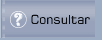
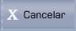

1.- Es Sesión de Aprobación: “SI”
Al dar clic en la opción”Si”, se despliega la pantalla que muestra 1.4, donde podrá aprobar o modificar Comprobantes ya existentes. Desde esta pantalla no podrá ingresar nuevos comprobantes.
Figura 1. Entrada Interactiva – Encabezado de los comprobantes – Sesión de aprobación (SI).
Mediante esta pantalla se define los parámetros de consulta del encabezado del Comprobante que desea consultar.
Compañía:
Despliega el código de la compañía que seleccionó en la pantalla anterior, de la cual desea consultar los comprobantes.
Los siguientes campos deberá ingresar si desea consultar un comprobante específico; caso contrario, únicamente le permite consultar los comprobantes registrados y para pasar a la siguiente pantalla deberá presionar los botones PRIMER COMPROBANTE o ULTIMO COMPROBANTE, como muestra 1.5.
Año Económico:
Digite los dos últimos dígitos del año contable de la compañía. Por ejemplo:
Si desea ingresar el 2007, se digita 07.
Periodo:
Digite el periodo contable en el que desea consultar.
Tipo:
Permite escoger el tipo de comprobante que va a consultar. Puede digitar el código y presionar la tecla ENTER o seleccionar el tipo de comprobante dando clic en el ícono ( ), el mismo que despliega la lista de comprobantes. Escoja el comprobante dando clic en el vínculo Select. Si no se ingresa nada el sistema asume el tipo 00.
), el mismo que despliega la lista de comprobantes. Escoja el comprobante dando clic en el vínculo Select. Si no se ingresa nada el sistema asume el tipo 00.
Una vez que haya ingresado toda esta información, presione el botón Consultar, que permite consultar el comprobante que especificó en los campos anteriores.
BOTONES




Autorizaciones:
Para poder acceder a la pantalla que muestra 1.5, el usuario conectado debe estar como mínimo autorizado a aprobar Comprobantes para el tipo del Comprobante seleccionado.
Consulta de Movimientos
Para consultar los movimientos la pantalla se ha dividido en tres secciones, como se muestra en 1.5.
Figura 1. Entrada Interactiva – Sesión de aprobación (SI) – Detalle de Comprobantes
SECCIÓN 1:
Únicamente es de consulta, presenta los datos básicos del encabezado, y los botones de navegación ( ) que permiten ir de un comprobante a otro.
) que permiten ir de un comprobante a otro.
SECCIÓN 2:
Status:
Despliega el estado que tiene el comprobante que se visualiza; dichos estados pueden ser los siguientes: No aprobado, Aprobado, Contabilizado y Rechazado.
Total Debe / Total Haber:
Despliega los valores del Debe y el Haber, dependiendo de los Importes que ingrese en la sección 3.
Diferencia:
Despliega la diferencia del Debe y el Haber; en este campo debe desplegar el valor Cero, para que el comprobante esté cuadrado.
SECCIÓN 3:
En esta sección se puede actualizar los diferentes movimientos registrados, cada movimiento presenta un vínculo Select. Dé clic en el vínculo del movimiento que desea actualizar. El movimiento seleccionado se presenta como muestra 1.6.
Figura 1. Entrada Interactiva – No Adición de comprobantes – Actualización de movimientos
Para actualizar el movimiento dé clic en el botón Corregir Información. Actualice la información que se requiera y presione el botón Grabar Movimiento.
El botón Eliminar Movimiento puede eliminar el movimiento en que se encuentre en ese momento.
Los botones que se encuentran en la parte superior se explican mas adelante en la explicación de Botones Superiores
Created with the Personal Edition of HelpNDoc: Free EBook and documentation generator